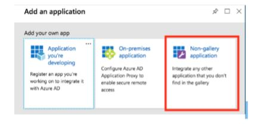

The information contained in these documents is confidential. Privileged and only for the information of the intended recipient and may not be used if
published or redistributed without the prior written consent of Workvivo Ltd.
The opinions expressed are in good faith and while every care has been taken in preparing these documents.;/
Workvivo makes no representations and gives no warranties of whatever nature in respect of these documents, including but not limited to the accuracy or completeness of any information
facts and/or opinions contained therein.
Workvivo Ltd, its subsidiaries, the directors, employees and agents cannot be held liable for the use of and reliance of the opinions, estimates, forecasts and findings in these documents.
Adding Workvivo as an Enterprise application in Azure AD
The first step to configuring Workvivo in Azure AD is to set Workvivo up as an Enterprise application using the Azure portal.
If you have already set up Workvivo as an application in Azure AD for Single Sign On purposes, you can skip this step and go directly to the existing Workvivo application in Azure AD.
In the Microsoft Azure Portal click on Azure Active Directory in the navigation bar on the left-hand-side of the screen. This will open the Azure AD. Find the menu item Enterprise applications under the Manage subnavigation list on the left-hand-side of the screen (as shown in the screenshot below).

On the next screen, locate and click the 'New application' button in the toolbar.
This will open a directory of applications you can add to your Azure AD instance. Under 'Add your own app' at the top of this screen.
Click on the 'Non-gallery application' option.

A sidebar will open, give the application the name 'Workvivo' and click the 'Add' button at the bottom of the screen. This will take a minute or so. when it is done you will be brought to the 'Overview' screen for the newly created Workvivo application.
This would be a good time to assign the users and/or groups in Active Directory that you want to have access to the Workvivo application. To do this navigate to the'Users and groups' menu option and click the 'Add user' button. Don’t worry, this will also allow you to add groups rather than just individual users.
If you have already set up Workvivo as an application in Azure AD for Single Sign On purposes, you can skip this step and go directly to the existing Workvivo application in Azure AD.
Next click 'Users and groups', search or browse to find the users or groups you want to assign access and click 'Select'. Then back on the 'Add Assignment' screen click 'Assign' to assign the selected users and groups access to the Workvivo application.
Setting up Provisioning Tenant URL and Secret
If you skipped the previous step navigate to the Workvivo application in your Azure AD instance. On the lefthand side, under the 'Mange' sub-navigation list click on 'Provisioning' to go to the provisioning setup screen.
https://[yourworkvivodomain]/scim/v2
Where 'yourworkvivodomain' is the domain name for your Workvivo instance e.g. xyzcompany.workvivo.com. Under 'Secret Token' enter the value provided to you by your Workvivo contact. Note that this token can’t be recovered so if you lose it a new token will need to be generated and set up in Azure AD. Press the 'Test Connection' button Azure AD should respond with a success message. Now press the 'Save' button at the top of the screen once again Azure AD should respond with a success message.
Disabling AD Group Provisioning
At this point, there should be two records displayed under the Mappings section, as shown below:

For the majority of customers we do not need to synchronise AD groups as we can get the relevant team data required for Workvivo directly from the AD user resource. So click on the 'Synchronise Azure Active Directory Groups to customappsso' link to edit the mappings for AD Groups. On the screen that opens, under 'Enabled' click 'No' to disable AD Groups provisioning and click the 'Save' button at the top of the screen. Click 'Yes' to confirm your changes.

When this is completed click the 'X' at the top right of the window to close the Attribute Mapping screen and return to the previous screen. You should see 'No' under the “Enabled” column for AD Groups in the Mappings section.
Configuring AD User Mappings
The final step is to confirm the mappings for AD Users. Click on the link 'Synchronise Azure Active Directory Users to customappsso' to open the Attribute Mapping screen for AD Users. Press the square icon to the left of the 'X' at the top right of the screen to enlarge it. Under 'Attribute Mappings' verify that the Azure AD attributes being mapped are the correct ones for your organisation. In most cases the default options should work.
1 - externalIdWe map this to email in Workvivo. Used by SCIM provisioning to determine when to add or update users in Workvivo.
1. - userName
We map this to email in Workvivo. By default this is set to 'userPrincipalName' in Azure AD – if this attributes value is not an email address in your organisation you should use a different attribute here e.g. 'mail'.
2. - name.givenName
The users surname.
3. - title
The users job title.
3. - phoneNumbers[type eq “mobile”].value
The user’s direct dial number. This is an optional field in Workvivo.
4. - active
Whether the user’s account should be active or not.
5. - department
The users department. This will be set up as a team in Workvivo if it does not already exist it will be created and the user will be assigned to it automatically.
addresses[type eq “work”].locality
The user’s location defaults to 'city' in Azure AD. This will be set up as a team in Workvivo if it doesn’t already exist it will be created and the user will be assigned to it automatically.
Again, most organisations should not need to change the default mappings but you can if you would like to use different Azure AD attributes for the given Workvivo field e.g. use a different attribute for location other than 'city'.
Return to Knowledgebase